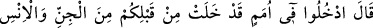
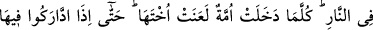
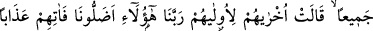
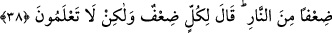

taptıklarının sonunu ve kaybolduğunu müşahede ettikleri için “kendi aleyhlerine,
kendilerinin kâfir olduklarına” hiç ibadete layık olmayan şeylere ibadet ettiklerine
“şahitlik ederler.” ve suçlarını itiraf ederler.
Bu ayet ile “Rabbimiz Allah’a andolsun ki biz ortak koşanlardan değildik.” (el-
En’am, 6/23) ayeti arasında çelişki yoktur. Çünkü ayetlerden her birinin, muhtelif
guruplarla ilgili ve farklı zamanlarda gelmiş olması ihtimali vardır.
el-İrşâd’da denilir ki: Belki de bu ayette, yeniden dirilişin (ba’s) ve cezanın son
derece sür’atli meydana geleceği vurgulanmak istenmiştir. Ayette sanki bunlar ölümün
gerçekleşmeye başlamasından itibaren meydana gelecekmiş gibi ifâde edilmiştir.
Nitekim Rasûlullah (s.a.v.) Efendimiz bu durumu şöyle haber vermektedir: “Ölen
kimsenin kıyameti kopmuştur.”[29] Yoksa ayette geçen soru, ona verilen cevap, onların
sonucu olarak gelen cehenneme girme emri ve cehennemliklerin karşılıklı konuşup
lanetleşmeleri ba’sden (öldükten sonra dirilişten) sonra olacaktır. Bunda şüphe yoktur.
38. Allah buyuracak ki: “Sizden önce geçmiş cin ve insan toplulukları arasında siz
de ateşe girin!” Her ümmet girdikçe yoldaşlarına lânet edecekler. Hepsi birbiri
ardından orada (cehennemde) toplanınca, sonrakiler öncekiler için, “Ey Rabbimiz!
Bizi işte bunlar saptırdılar! Onun için onlara ateşten bir kat daha fazla azap ver!”
diyecekler. Allah da: Zaten herkes için bir kat daha fazla azap vardır, fakat siz
bilmezsiniz, diyecektir.
Kıyamet günü Allah Teâlâ veya meleklerden biri: “Sizden önce geçen cin ve insan
topluluklarıyla” yani, geçmiş ümmetlerden insan ve cin kâfirlerle “beraber ateşe
girin!” buyurur.”
Cinler, insanlardan önce yaratıldıkları için insanlardan önce zikredilmişlerdir. Allah
Teâlâ cinleri yaratınca onlardan bazısı kâfir, bazısı da mü’min oldu. Sonra kâfir
olanları, mü’min olanlarına saldırıp onları yok etmek isteyince Allah Teâlâ onların
üzerine meleklerden bir ordu gönderdi. Ordunun komutanı İblis idi. Bunlar kâfir cinlere
saldırıp hepsini helâk ettiler. Onların ardından Allah Teâlâ Âdem’i ve ondan da neslini
yarattı. Onlardan da Kâbil gibi bir kısmı kâfir, Hâbil gibi bir kısmı da mü’min oldu. Şu
halde şimdiye kadar her zaman cehenneme girmeyi hak eden kâfir bir topluluk ve
cennete girmeye layık mü’min bir topluluk olagelmiş, âlemin yok olmasına dek de